Nesta aba iremos mostrar como configurar e utilizar o seu glpi com o melhor desempenho:
-1. Configurar
*Configurações Gerais
- Na opção de configuração geral, altere os "Limite de padrões decimais" para 2
- Altere a opção "Tamanho da página para listas suspensas (paginação usando rolagem)" de 100 para 50
-2. Valores padrão
*Personalização
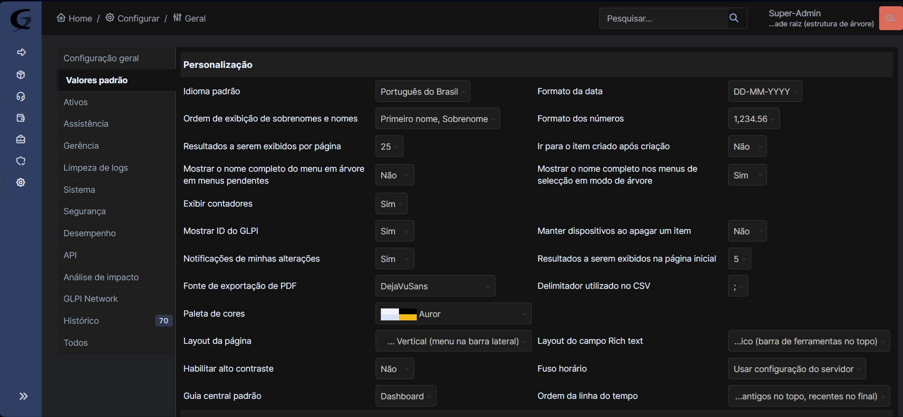
- Troque a opção de "Ordem de exibição de sobrenomes e nomes" para "Primeiro nome, sobrenome"
- Na opção "Resultados a serem exibidos por página" coloque a quantidade baseada na que possui
- Marque "Sim" na opção "Mostrar ID do GLPI"
- Troque o "Formato da data" ´para "DD-MM-YYYY"
- Na opção "Formato dos números" selecione a opção "1,234.56"
- Altere a "Guia central padrão" para a "Visão pessoal"
*Assistência - Marque sim na opção "Mostrar novos chamados na página inicial"
-3. Assistência - Configure a opção "Limite dos agendamentos para planejamentos" de acordo com as horas trabalhadas - Remova o dia de domingo da opção "Dias de trabalho do planejamento" (a menos que a empresa funcione no domingo)
-4. Autenticação Na opção de autênticação sera regitrado de acordo com o método utilizado pela empresa
- Se a empresa possui o AD com vários usuarios utilize o diretório LDAP
- Se utilizam e-mail utilize a opção "Servidor de e-mail" e configure de acordo com as instruções do e-mail
-5. Entidade *Nomeando a entidade principal
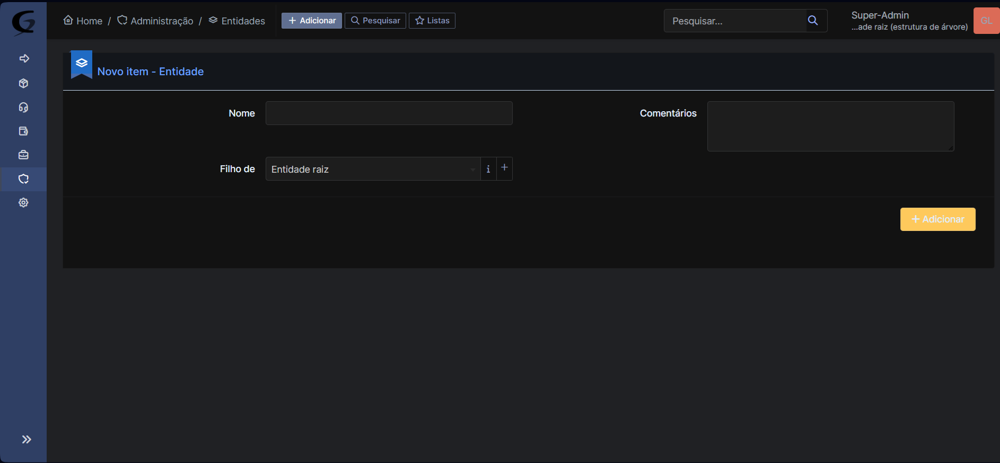
- Nomeie de acordo com o nome da empresa ou instituição sobre a qual compõem todos os equipamentos e pessoas a serem registradas
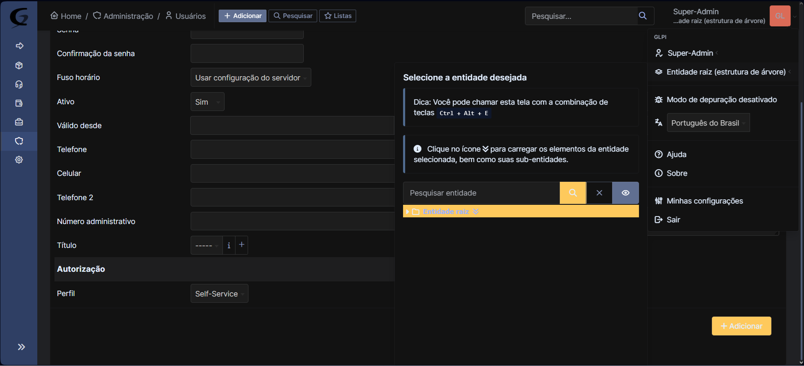
- Caso haja uma ou mais filias da empresa sendo administradas é possivel alterar a entidade clicando no canto superior direito e selecionando a entidade a ser monitorada.
-6. Grupos *Separação de acordo com a função
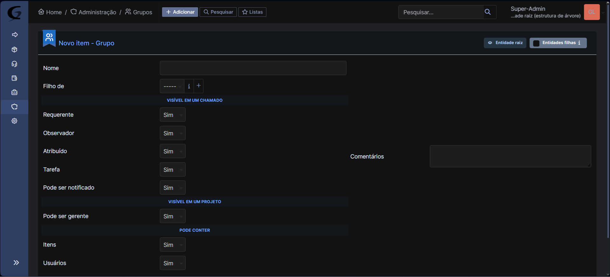
- Nesta aba é possivel nomear os diferentes grupos que executam diferentes funções dentro da empresa, alterando ,tambem, as funções que poderão exercer dentro da plataforma
-7. Usuário *Criando usuários
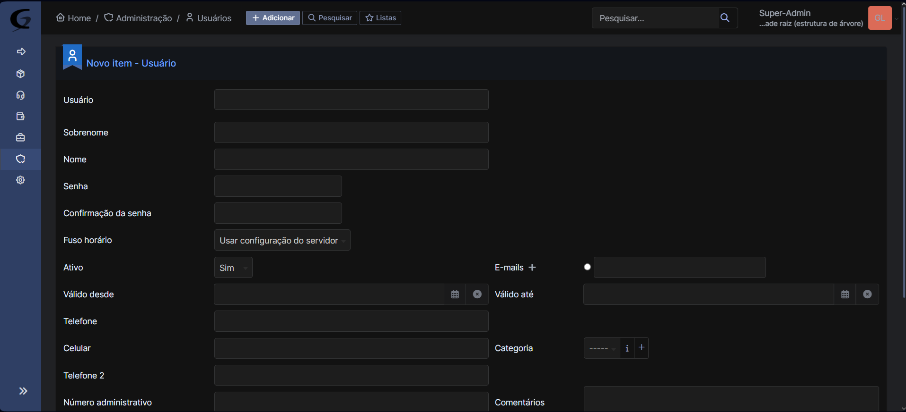
- Aqui é onde serão criados os respectivos usuários que irão utilizar a plataforma colocando nome,criando seu respectivo email e senha, a que entidade pertence, etc.
- Poderá ,também ,ser determinado que tipo de autorização cada usuário poderá ter, com cada nível contendo algumas funções que outros não terão.
-8. Perfis *Perfil
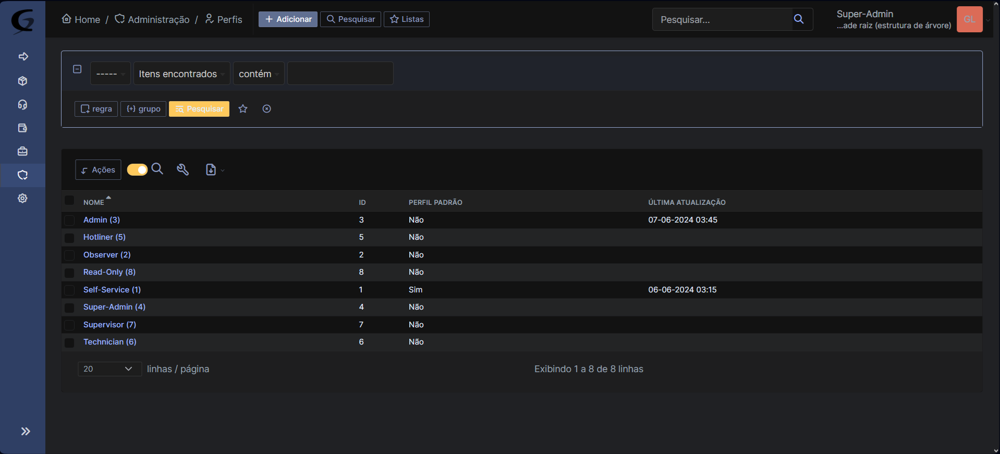
- Nesta aba estarão listados todos os pautorizações disponiveis
*Assistência
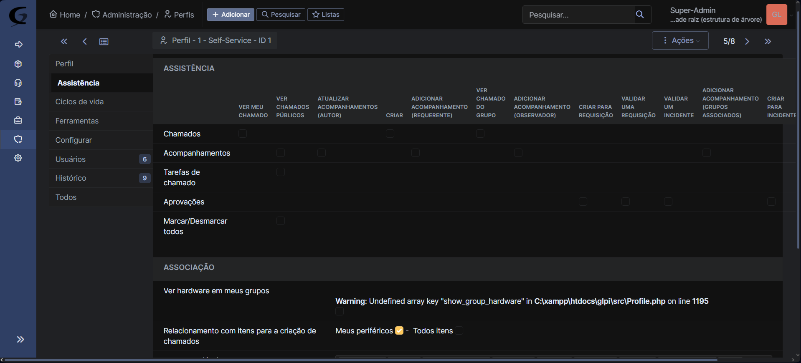
- Altere e/ou determine as funções que poderão ser exercidas por cada um dos niveis de autorização
-9. Inventário * Configurações de Inventário
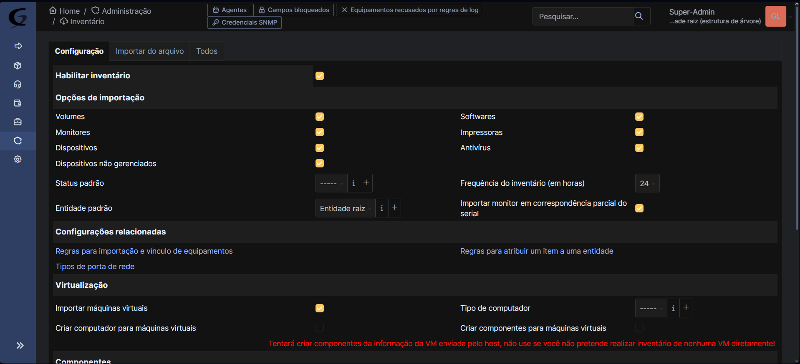
- Determine que tipos de itens poderão ser listados no inventário.
-10. Criar Chamado *Criando um chamado
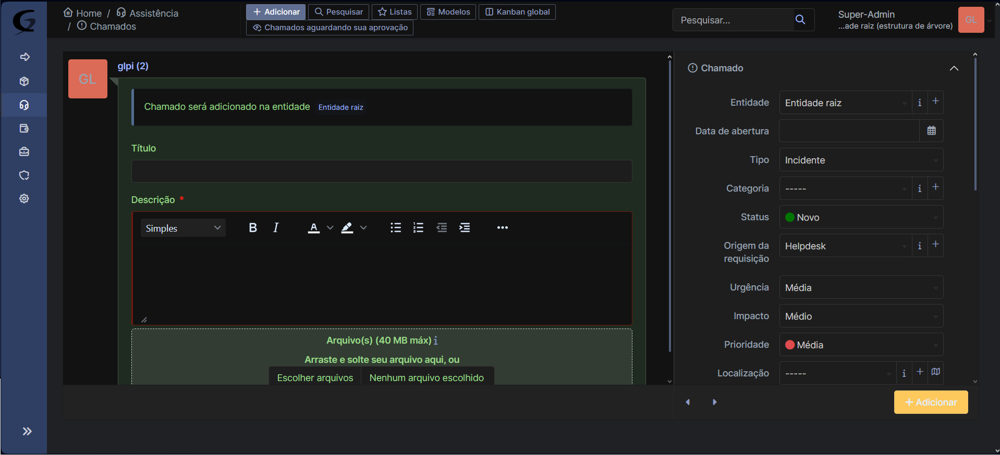
- Crie um chamado que servirá como mensagem a ser recebida por todos os usuários,descrevendo do que se trata o chamado, determinando o nivel do assunto, o tipo de cartegoria, o nível de urgência, etc.
-11. Chamados * Lista de chamados
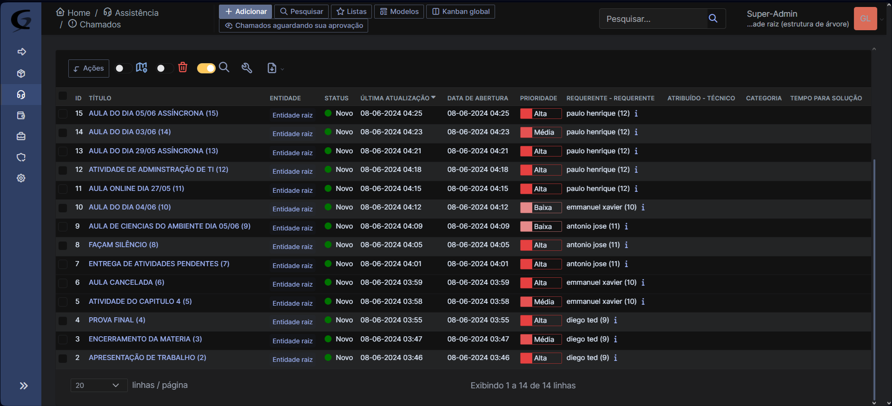
-
Nesta aba serão listados todos os chamados realizados
-
Respondendo Chamados
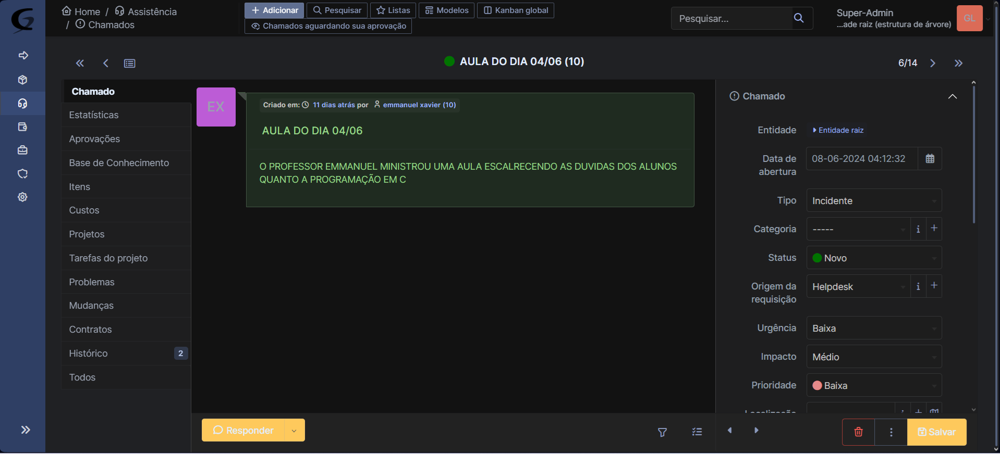
- Cada usuário poderá responder ao chamado e tratar do assunto, que será recebido por quem emitiu o chamado
-12. Planejamento *Criando um evento
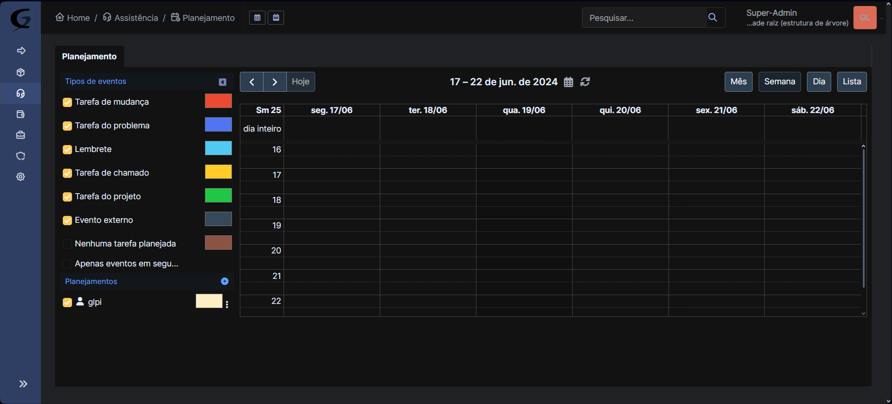
- Crie um evento de acordo com a data e a hora desejada, que poderá ser visualizado para os outros usuários
*Descrevendo o evento
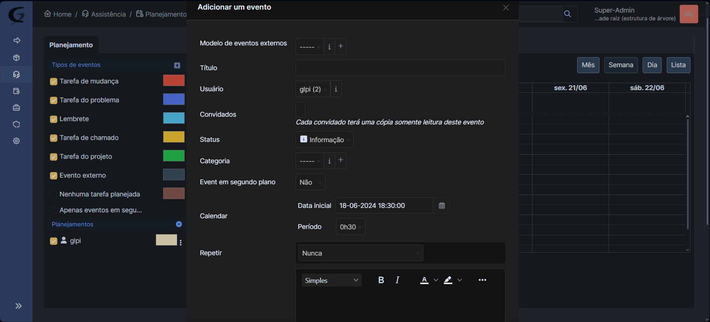
- Personalize o seu evento, determinando data e hora, descrevendo-o, selecionando o usuário a ser convidado, etc.
-13. Ativos
- Listando componentes do inventário
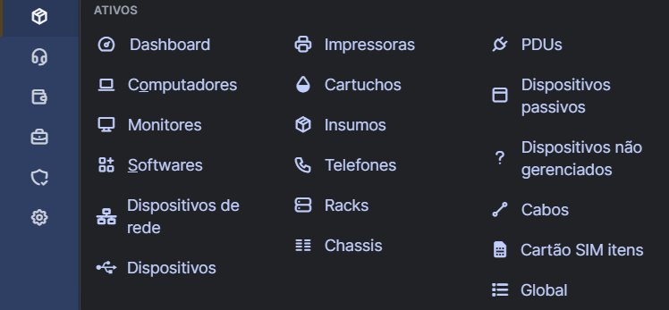
- Nesta aba é possivel adicionar e visualizar todos os itens que compõem o inventário da empresa, cada item é separado por tipo,, para adicionar um item clique no item desejado a ser adicionado, clique no botão superior esquerdo "adicionar", descreva as caracteristicas exigidas e clique em salvar,